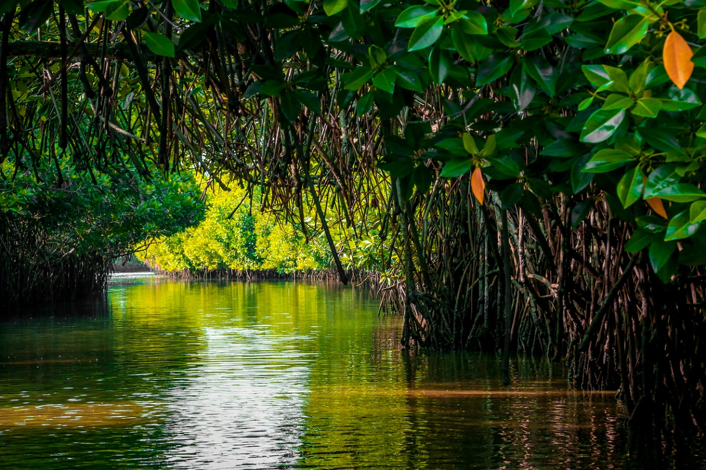
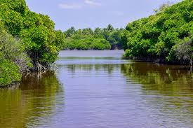

the Mystical Mangroves: A Guide to Mangrove Boat Tours in Kalpitiya
NNestled along the northwestern coast of Sri Lanka, Kalpitiya is a paradise for nature enthusiasts and adventure seekers alike. While its renowned for its dolphin and whale watching tours, another hidden gem awaits exploration - the mystical mangrove forests. Embarking on a mangrove boat tour in Kalpitiya offers a unique and immersive experience, showcasing the rich biodiversity and serene beauty of these coastal ecosystems.
Discovering the Mangrove Ecosystem:
Mangroves are coastal wetlands characterized by salt-tolerant trees and shrubs, forming dense forests along estuaries, lagoons, and tidal flats. Kalpitiya is blessed with several mangrove habitats, including the Dutch Bay Mangrove Forest and the Puttalam Lagoon Mangroves. These ecosystems play a crucial role in coastal protection, providing habitat for diverse flora and fauna, and supporting local livelihoods through fishing and eco-tourism.
The Mangrove Boat Tour Experience

A mangrove boat tour in Kalpitiya offers a captivating journey through winding waterways and lush greenery. Visitors can choose from various tour operators offering guided excursions tailored to explore the unique features of the mangrove forests. Here’s what to expect on a typical mangrove boat tour:
Scenic Boat Ride:
Board a sturdy boat piloted by experienced guides who navigate through narrow channels and open waters, providing insights into the mangrove ecosystem's significance and conservation efforts.
Mangrove Flora and Fauna:
Marvel at the diverse plant species adapted to brackish water, such as mangrove trees with their distinctive prop roots and vibrant mangrove ferns. Keep an eye out for endemic bird species like the Sri Lankan grey hornbill and the black-capped kingfisher that call these mangroves home.
Wildlife Encounters:
Witness the thriving marine life, including crabs scuttling along the mudflats, colorful fish darting beneath the boat, and if lucky, catch glimpses of elusive creatures like water monitors and estuarine crocodiles basking in the sun.
Educational Insights:
Learn about the ecological importance of mangroves in coastal protection, carbon sequestration, and their role as nurseries for juvenile fish and crustaceans, vital for sustaining marine biodiversity.
Cultural Interactions:
Some tours offer opportunities to visit local fishing communities nestled within the mangroves, providing a glimpse into their traditional livelihoods and cultural practices.
Photographic Delights:
Capture stunning moments of natural beauty, from sun-dappled mangrove tunnels to breathtaking sunset vistas over the tranquil waters, creating lasting memories of your mangrove adventure.
Best Time for Mangrove Boat Tours:
The best time to experience mangrove boat tours in Kalpitiya is during the dry season from November to April when the weather is favorable with calm seas and clear skies. However, tours are available year-round, with each season offering unique sights and experiences, such as migratory bird sightings during the monsoon months.
Eco-Tourism and Conservation:

Mangrove boat tours in Kalpitiya promote sustainable tourism practices, emphasizing the importance of preserving these fragile ecosystems. Tour operators and local communities work together to minimize environmental impact, ensuring that future generations can continue to enjoy and benefit from these natural wonders.
A mangrove boat tour in Kalpitiya is not just a journey through picturesque landscapes but also a gateway to understanding the intricate relationships between humans and nature. Whether you're a nature enthusiast, wildlife photographer, or simply seeking tranquility amidst natural beauty, a mangrove boat tour promises an unforgettable experience, immersing you in the wonders of Sri Lanka's coastal treasures. So, set sail on an adventure of discovery and conservation, and let the mystical mangroves of Kalpitiya captivate your senses.
In conclusion, Kalpitiya's island tours offer a blend of natural beauty, cultural immersion, and adventurous experiences. Whether exploring fishing communities on Baththalangunduwa or marveling at wildlife in Wilpattu, each island tour unveils a unique facet of Sri Lanka's coastal charm, leaving travelers with unforgettable memories of this coastal paradise.
NOTE:-
If you like to Mangrove Boat Tours in Kalpitiya,
you can know about the prices and packages
from the hotels mentioned on our home page
and can book.